Sinds je laatste blad is het spel van pixels naar 3D gegaan: alles wordt in Blender gemaakt met code en als plaatje in het spel gezet. Vak 1 is het echte winkelplaatje, vak 2 en de kleine beelden in vak 3 komen uit de echte Windows-build. De grote figuren in vak 3 en 4 zijn de renders; het kleine eronder is hoe ze in het spel staan.
De grap in één beeld: de ridder schrikt, want onderaan Gloops hoedentoren zit dezelfde helm als de zijne.
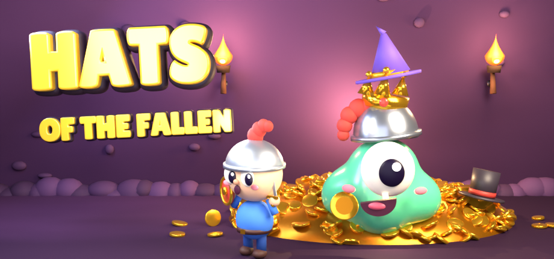
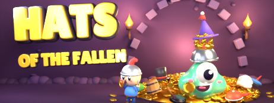
En zo staat het bovenaan je Steam-bibliotheek: de grote banner met het logo erop (Steam legt het logo linksonder). Op elke letter een hoed uit het spel.
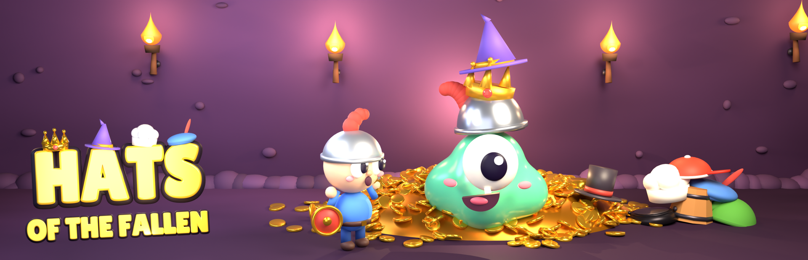
Het echte spel op Windows, twee keer zo groot: ridder op de ladder met een wolkje boven zijn hoofd, held met kroon op weg naar de stekels, Gloop bij de schat.
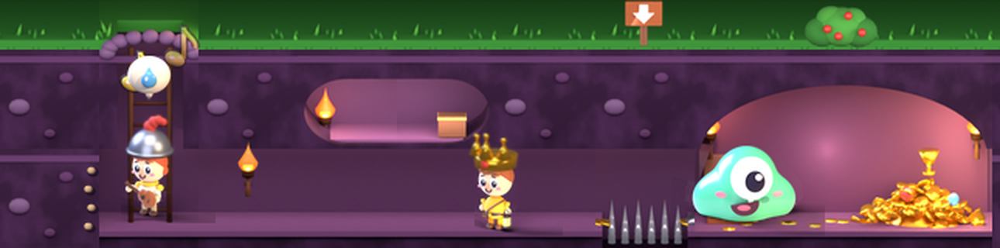
En zo op ware grootte, onderaan je scherm boven de taakbalk (strook 160 hoog; 96 en 120 kan ook, rechtsklik). Het kaartje rechts zegt wat er net gebeurde, in dezelfde stijl als het hol: hier kocht je net Big Gloop, met een knop om dat terug te draaien.
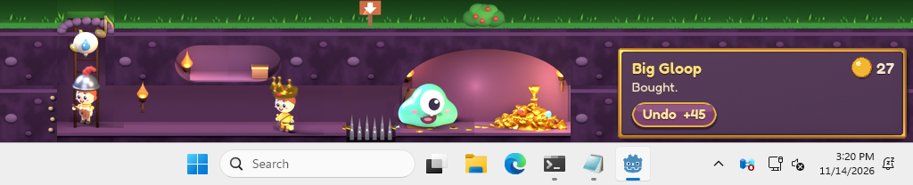
Na een paar uur spelen: Gloop met zijn hoedentoren, en naast hem de berg hoeden van alle gevallen helden (opname uit de build, drie keer zo groot). Gloop zit hier al op de 3D-troon uit vak 3; de stekels eronder zijn de val die je voor de schatkamer kocht.
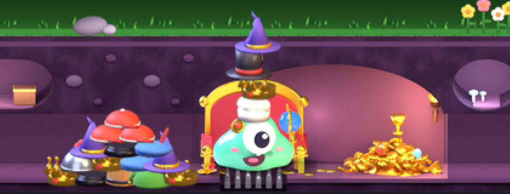
Rust, knipper, blij en hap. Onder elke Gloop zo groot als in het spel.
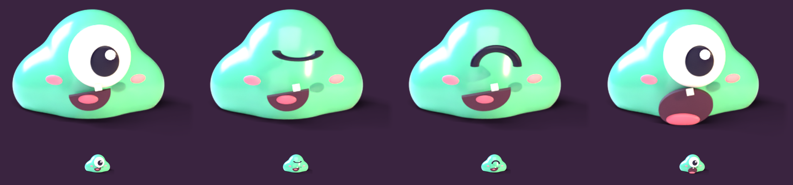
De duurste upgrade, Royal Gloop: een troon met een scepter. Uit het echte spel, drie keer zo groot, met rechts de ware grootte.
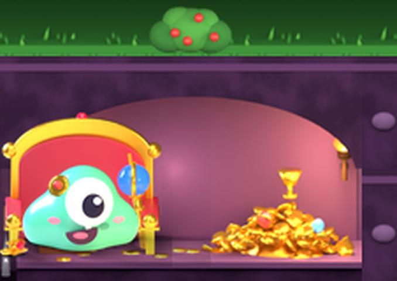
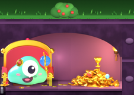
Ridder en heks, elk met een willekeurige hoed. Precies die hoed belandt op Gloops toren als hij ze opeet. Onder elk figuur zo groot als in het spel.
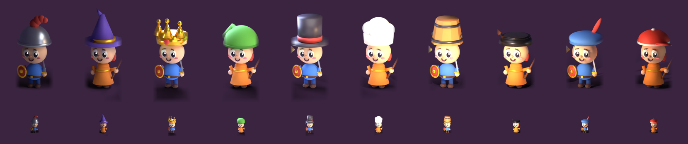
En de gewone helden (de meeste bezoekers, met een lantaarn, in vijf kleuren), de dief met zijn buit en de bard met zijn luit.
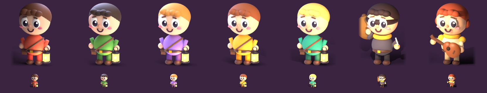